Косяки с логикой.
Страница 2 из 15 •  1, 2, 3 ... 8 ... 15
1, 2, 3 ... 8 ... 15
Re: Косяки с логикой.
автор Demiurge-kun в Вс 14 Сен 2014 - 14:04
Д1. Попросил Славю проводить меня, в результате чего Ульянку не встречал, однако реплика идет от ее имени, хотя мы не знакомы.
Еще косяк в графическом плане, фиксить не требую, но на "будущее" отметить стоит.
Д1. ГГ только что попал в лагерь, и даже не снял свитер, но в зеркале отражается в пионерской форме.
Вроде логический косяк, хотя я могу просто незаметить.
Д1. В столовой Славя сказала, чтобы ГГ вернулся к вожатой т.к. он прописан у нее, тем не менее Сёма удивляется, когда вожатая заявляет, что спать он будет с ней.
Скрины не приложу, т.к. нет прав на отправку внешних ссылок.

Demiurge-kun- Хикка

- Сообщения : 216
Дата регистрации : 2014-09-13
Re: Косяки с логикой.
автор Demiurge-kun в Вс 14 Сен 2014 - 15:15
Д2.
Провожатый: Унылка.
Непройденый участок: Кружок кибернетиков. Все остальное посещено.
Суть: посетил сцену, но закончив обход Сёма возвращается туда и повторяет все свои действия, что и раньше, а потом идет обедать. Так и должно быть? Если да, то на крайняк стоило бы убрать размышления по поводу аппаратуры, т.к. он уже ее видел.
Demiurge-kun- Хикка
- Сообщения : 216
Дата регистрации : 2014-09-13
Re: Косяки с логикой.
автор Demiurge-kun в Вс 14 Сен 2014 - 15:24
Д2. Столовая. Сел с Мику.
Реплика не от того лица. Тут вроде должны быть мысли Сёмы.
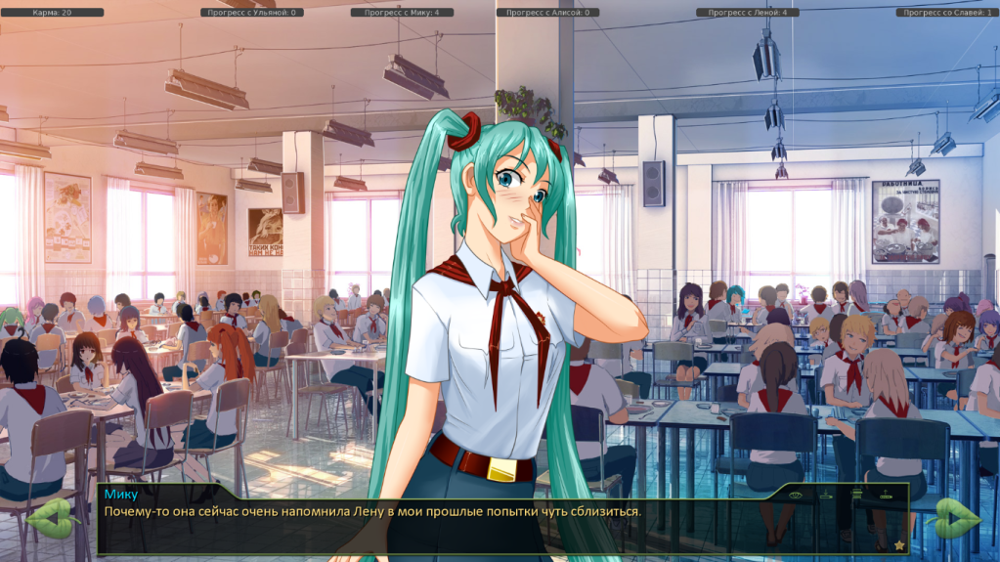
Demiurge-kun- Хикка
- Сообщения : 216
Дата регистрации : 2014-09-13
Re: Косяки с логикой.
автор Demiurge-kun в Вс 14 Сен 2014 - 16:03
Выделеная реплика должна идти от лица Семена, а не быть мысленной, т.к. непонятна реакция Слави.
- тык:
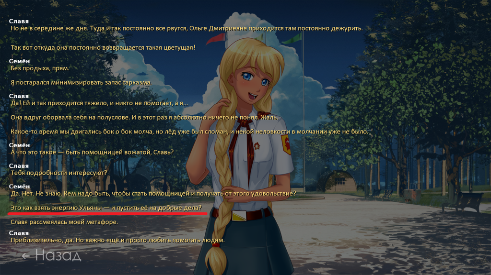
Выделенная реплика должна идти от лица Электролкина, а не быть описанием действия.
- тык:
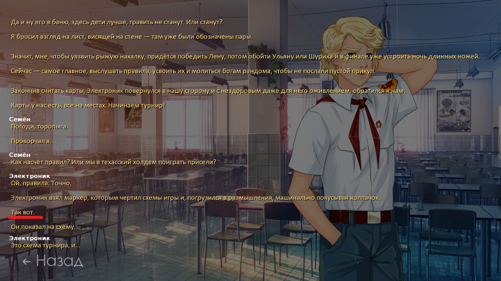
Выделенные реплики должны идти от лица Электролкина, а не быть, опять же, описанием действий.
- тык:
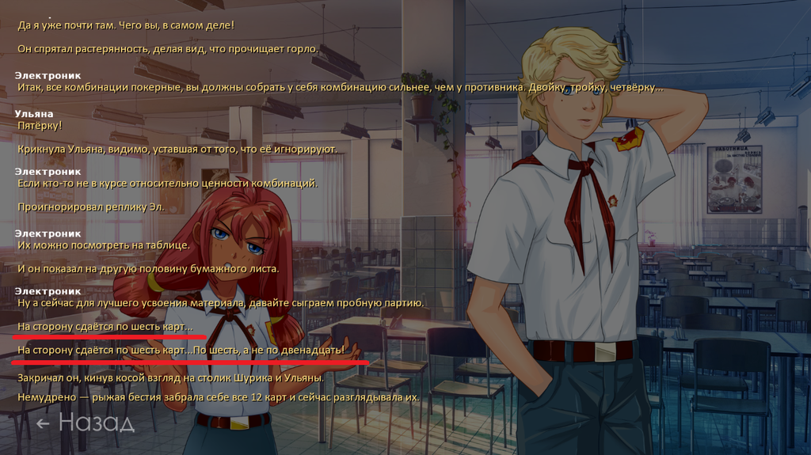
Впрочем, возможно я такой придирчивый и непонимающий текста...
Не знаю дырка или нет, но во время турнира можно спокойно фармить очки побеждая Лену и предлагая реванш. Это жук или награда за упорство?
Следом, я заметил косяки с логикой. Возможно я невнимательно играю, или лалка по жизни и "фишку не секу", но 7дл-кун, прошу просмотреть на предмет дырок...
- тык:
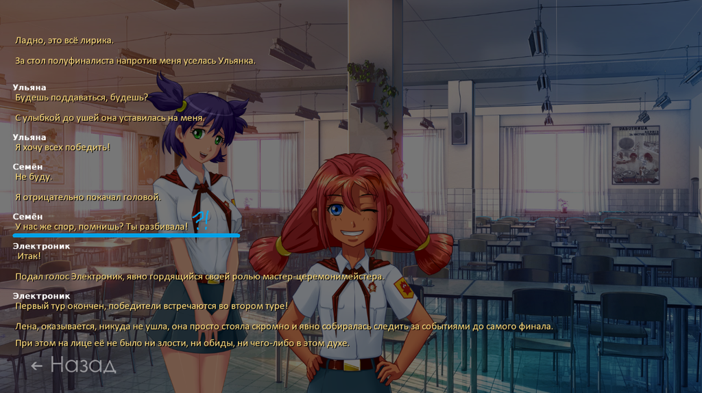
Во время спора с Алиской, я не помню, чтобы Улька вообще присутствовала при этом. Реплика неуместна, ИМХО.
- тык:
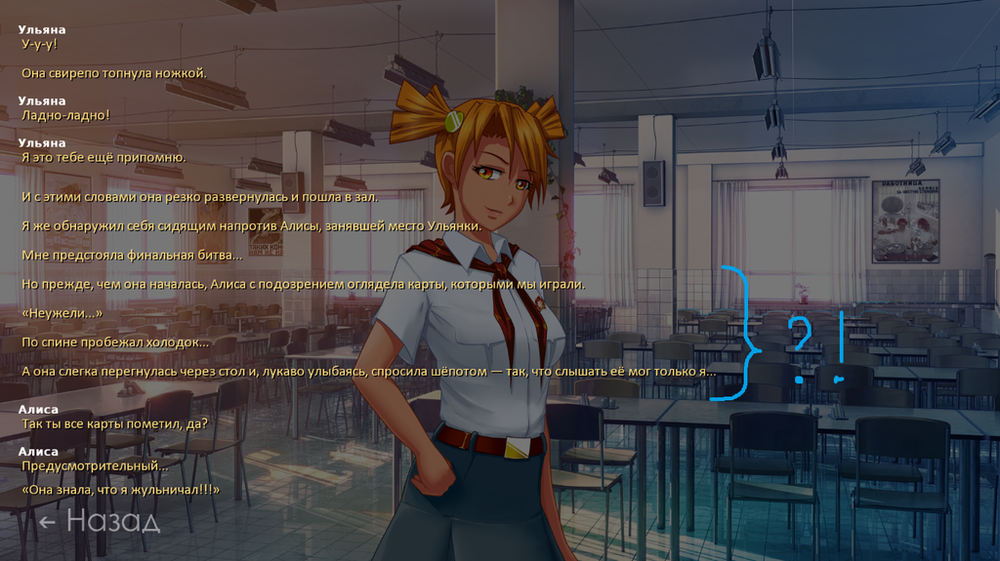
Все вроде бы логично, да я шел за картами один, но на выборе "Пометить карты/нет" я не захотел их помечать. Реплики неуместны, опять же.
Demiurge-kun- Хикка
- Сообщения : 216
Дата регистрации : 2014-09-13
Re: Косяки с логикой.
автор Admin в Вс 14 Сен 2014 - 16:59
Насчёт неограниченного количества фарма лп в ходе реваншей с Унылкой - это не баг, это специально отрисованная фишка.
Admin- Admin
- Сообщения : 84
Дата регистрации : 2014-09-06
Re: Косяки с логикой.
автор peregarrett в Чт 18 Сен 2014 - 19:33
там же, у кибернетиков. Сначала "зато удалось раздобыть миниджек", а потом можно спросить провод у Шурика.
Турнир, если продуть Ульянке - "Я слил, несмотря на то, что пометил карты" - хотя и не помечал. И еще при споре с Алисой упоминается "свой собственный крап", но там более-менее логично

peregarrett- Находка для шпиона

- Сообщения : 3264
Дата регистрации : 2014-09-07
Возраст : 36
Re: Косяки с логикой.
автор Гость в Пт 19 Сен 2014 - 13:35
1. Если в процессе беготни с бегунком зайти на эстраду, а потом получить четыре подписи, то Семён опять попрётся на эстраду и будет делать там ровно то же самое ещё раз. Вообще этот автоматический обязательный выход на эстраду нужен?
2. Отыгрыш крутого борцуна не очень самосогласован. Для выхода на него достаточно попытки сопротивляться обливанию из ведра. Мне кажется, что попытаться вырваться может и не танк, а выход на танка логично делать через выбор, как именно сопротивляться (например убежать или доминировать).
3. Семёна ловят на шулерстве с мечеными картами, даже если карты он не метил.
4. Если после карточного турнира (на котором Семён даже поражение принимает на позитиве) пойти к муз. кружку, то от одного только вида здания кружка Семён упадёт в депрессию и безысходность. Почему так?
Гость- Гость
Re: Косяки с логикой.
автор Гость в Пт 19 Сен 2014 - 13:37
Гость- Гость
Re: Косяки с логикой.
автор 7dl-kun в Пт 19 Сен 2014 - 14:27
1. Выход на эстраду нужен, косяк исправил.Odrant пишет:Несколько вещей:
1. Если в процессе беготни с бегунком зайти на эстраду, а потом получить четыре подписи, то Семён опять попрётся на эстраду и будет делать там ровно то же самое ещё раз. Вообще этот автоматический обязательный выход на эстраду нужен?
2. Отыгрыш крутого борцуна не очень самосогласован. Для выхода на него достаточно попытки сопротивляться обливанию из ведра. Мне кажется, что попытаться вырваться может и не танк, а выход на танка логично делать через выбор, как именно сопротивляться (например убежать или доминировать).
3. Семёна ловят на шулерстве с мечеными картами, даже если карты он не метил.
4. Если после карточного турнира (на котором Семён даже поражение принимает на позитиве) пойти к муз. кружку, то от одного только вида здания кружка Семён упадёт в депрессию и безысходность. Почему так?
2. Для выхода на борцуна необходима сила выше номинала, иначе Сёмку всё равно обливают. А силу можно накопить, пройдя один ивент... Короче, там сложно всё. И, скорее всего, будет переделываться, если идея с раздельными прологами/прохождениями приживётся.
3. Исправил.
4. Потому что он аутист, и у него психика перегружена от общения? (= Текст немного причешу, но менять не стану.

7dl-kun- Находка для шпиона
- Сообщения : 3026
Дата регистрации : 2014-09-07
Откуда : здесь столько наркоманов?
Re: Косяки с логикой.
автор Гость в Пт 19 Сен 2014 - 16:39
7dl-kun пишет:
4. Потому что он аутист, и у него психика перегружена от общения? (= Текст немного причешу, но менять не стану.
Резонно. Тогда наверное логично будет добавить ему страданий на самом турнире, типа как же все достали, сколько же вас тут много, эдак по нарастающей.
Гость- Гость
Re: Косяки с логикой.
автор Гость в Пт 19 Сен 2014 - 17:21
Гость- Гость
Re: Косяки с логикой.
автор 7dl-kun в Пт 19 Сен 2014 - 17:29
Логично. Чтобы ужину, значит, тесниться не пришлось (=Odrant пишет:Фраза "Всё больше места под сам ужин останется" в момент съедания того, что осталось от торта выглядит нелогичной, поскольку ужин был раньше торта. Можно поменять на что-то вроде "Тем более после ужина все были сытыми" или что-то такое?
7dl-kun- Находка для шпиона
- Сообщения : 3026
Дата регистрации : 2014-09-07
Откуда : здесь столько наркоманов?
Re: Косяки с логикой.
автор Demiurge-kun в Пт 19 Сен 2014 - 21:15
К сути:
Д1. Ульянка играющая в футбол изображается в пионерской форме, но при разговоре с ГГ она в СССРовской футболке.
___
Update
___
Косяк в коде. Договорился чтоб Алиска меня проводила, она сказала: у музкружка через 15 минут. За "условные" 15 минут прошел по паре локаций, в одиночку помог Славе убраться на площади и зашел к музкружку. Затем взял с собой Алиску и... Снова помог убраться на УЖЕ УБРАНОЙ площади. Про повторы на других локациях, умолчу, ибо это само собой разумеется...
Предлагаю, ограничить первый выбор локаций одним музкружком (ленивый вариант), или копаться в коде (задрот_over9000LVL вариант).
Снова диалоги.
Текст выделеннный синим, должен идтить от лица Колла-самы.
Текст выделенный коричневым - от лица Сёмы.
- Тык:
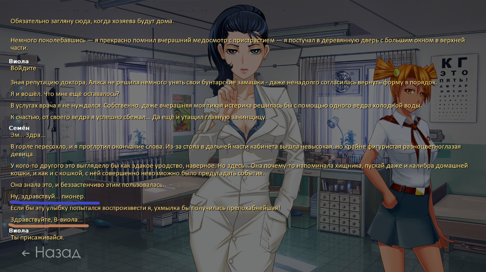
А библиотечную сценку-то непофиксили
- Тык:
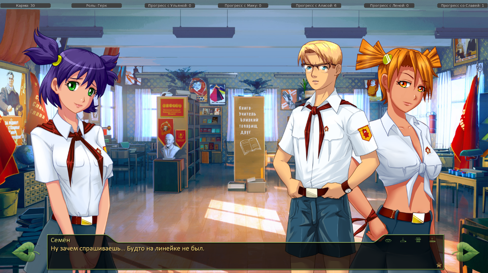
Норма жуколовства на сегодня выполнена, раскланиваюсь и иду спатеньки.
Demiurge-kun- Хикка
- Сообщения : 216
Дата регистрации : 2014-09-13
Re: Косяки с логикой.
автор Demiurge-kun в Сб 20 Сен 2014 - 13:39
Оффтоп: рут зафейлил, выбрав неверный пунктик во время сна. Было обидно, но я б не остановился и сообщение вышло бы длиннее, мне кажется...
Д2. Выделенная реплика должна идти изниоткуда, ибо описание действия.
- Тык:
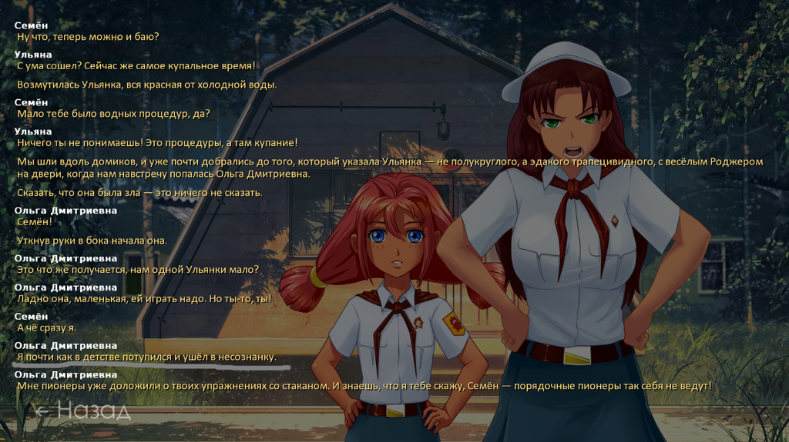
Д2. Наш ГГ либо тупой до ужаса, либо жучок пролез. ГГ не узнает "японочку", при том, что состоит в музыкальном кружке, лол. Взаимоисключающие пункты, однако...
- Тык:
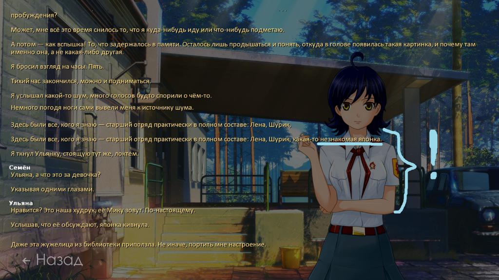
Д2. Следущее, не баг, а скорее... Ну... Не звучит словечко, вобщем. Предлагаю заменить на "ничуть" или "нисколько".
- Тык:
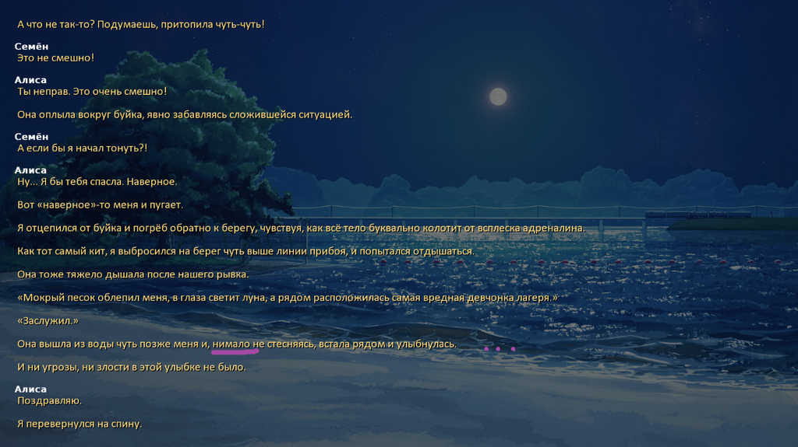
Следущее. Тут не до конца ясно, чья эта реплика. В любом случае ее нужно либо в кавычки (мысли Семы), либо от лица ДваЧе.
- Тык:
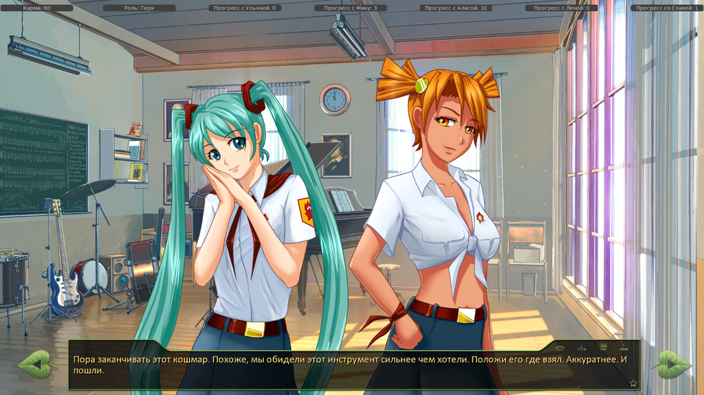
Реплика должна идти от лица ДваЧе (или Семы, я не до конца допер)
- Тык:
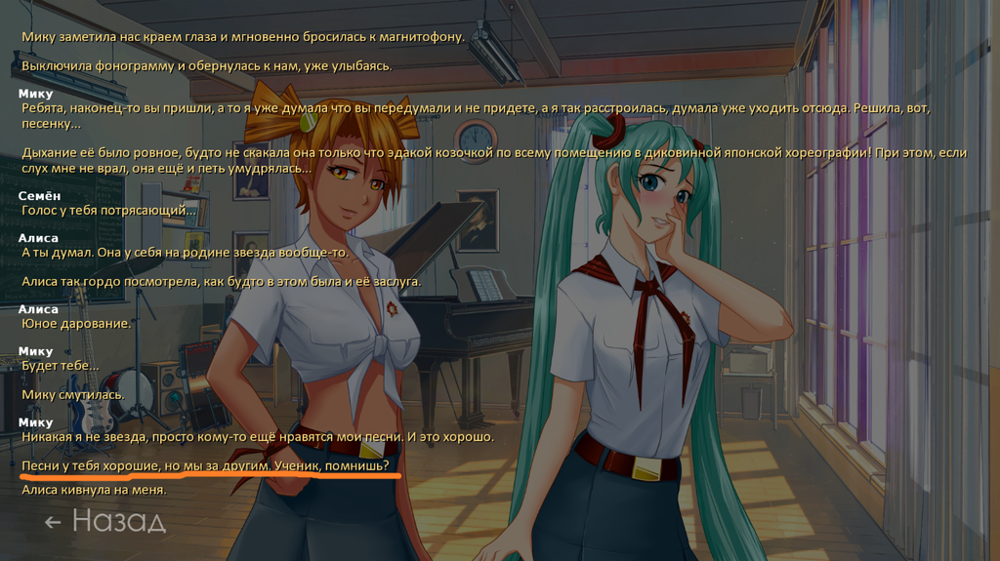
Выделенная реплика должна идти от внутреннего голоса, а не быть мыслями или описанием действия.
- Тык:
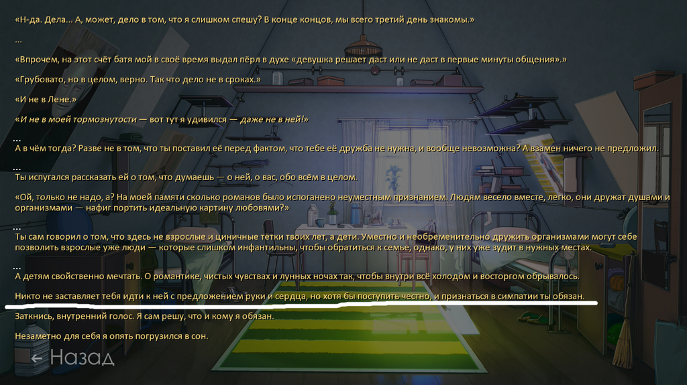
По техчасти багов не нашел, вернее, думаю, что не нашел, однако предпосылки были... Я просто посетил сцену (Мику-диджей-рут), а затем пошел в клуб. Была одна странность в диалогах. Я уговорил Мику диджеить, но когда прихожу в клуб с Алиской учиться играть на гитаре, где Сема про себя считает, что Мику, вероятно, будет диджеить. БЛДЖАД! Он же сам ей об этом сказал! Зачем строить догадки?
Но, думаю, тут скорее не баг, а мой косячок, ибо я слишком сычевый, чтобы побежать за "любимой Алиской сразу в клуб" и просто решил пройтись до сцены, наткнувшись на Славю... Сам хотел момент переиграть но сейва не сделал Т_Т
Пока все.
Demiurge-kun- Хикка
- Сообщения : 216
Дата регистрации : 2014-09-13
Re: Косяки с логикой.
автор 7dl-kun в Сб 20 Сен 2014 - 13:50
За "нимало не стесняясь" - пардон, но этот оборот мне слишком нравится (=
7dl-kun- Находка для шпиона
- Сообщения : 3026
Дата регистрации : 2014-09-07
Откуда : здесь столько наркоманов?
Re: Косяки с логикой.
автор Demiurge-kun в Сб 20 Сен 2014 - 13:56
7dl-kun пишет:По незнакомой японке чуть подробнее, пожалуйста - какой тип прохождения, какие опции выбирал?
Пролог Герк.
Потаскал Алису на руках.
Всячески повышал ЛП Алиски.
В обход с ней ходил.
Посетил музкружок, записался в него, получил как полагается 3 балла Мику.
Потом ГГ поплелся на сцену, гмкнул в микрофон и пошел кушать.
Потом послеобеденная сиеста (если память не изменяет), где ГГ снится сон с Алиской.
Затем начало турнира, где собсна ГГ не узнает руководителя музкружка.
Вроде ничего не зыбыл...
Demiurge-kun- Хикка
- Сообщения : 216
Дата регистрации : 2014-09-13
Re: Косяки с логикой.
автор 7dl-kun в Сб 20 Сен 2014 - 14:06
7dl-kun- Находка для шпиона
- Сообщения : 3026
Дата регистрации : 2014-09-07
Откуда : здесь столько наркоманов?
Re: Косяки с логикой.
автор Demiurge-kun в Сб 20 Сен 2014 - 14:09
7dl-kun пишет:Лады, спасибо. Сейчас восстановлю ситуацию, и если удастся придушить жука, выкачу хотфикс.
Дай боже...
А я, наверное, буду делать сейвы перед каждым выбором действия, чтоб помнить что выбирал... А то от моего мямлянья не много проку, ИМХО.
Demiurge-kun- Хикка
- Сообщения : 216
Дата регистрации : 2014-09-13
Re: Косяки с логикой.
автор 7dl-kun в Сб 20 Сен 2014 - 14:19
7dl-kun- Находка для шпиона
- Сообщения : 3026
Дата регистрации : 2014-09-07
Откуда : здесь столько наркоманов?
Re: Косяки с логикой.
автор Demiurge-kun в Сб 20 Сен 2014 - 14:56
7dl-kun пишет:Готово, по идее, проблему должно решить.
Повторил те же действия. Приятно поглядел на фиксы тех багов, что я выложил. ГГ узнал Мику.
Оперативная работа, автор-сама.
Demiurge-kun- Хикка
- Сообщения : 216
Дата регистрации : 2014-09-13
Re: Косяки с логикой.
автор peregarrett в Вс 21 Сен 2014 - 23:31
"Но ты того и гляди свалишься. Такой стресс - сначала со Славей, потом со мной..." - эээ, со Славей мы только утром в карты под присмотром Виолы, и с тех пор не виделись. Наверно, из другой ветки занесло.
Даи перед сном про Славю в радиорубке что-то такое думает
peregarrett- Находка для шпиона
- Сообщения : 3264
Дата регистрации : 2014-09-07
Возраст : 36
Re: Косяки с логикой.
автор Гость в Пн 22 Сен 2014 - 3:41
Гость- Гость
Re: Косяки с логикой.
автор Ingvar в Пн 22 Сен 2014 - 10:40
Ingvar- Сыч

- Сообщения : 63
Дата регистрации : 2014-09-07
Возраст : 39
Откуда : Санкт-Петербург
Re: Косяки с логикой.
автор 7dl-kun в Пн 22 Сен 2014 - 11:06
7dl-kun- Находка для шпиона
- Сообщения : 3026
Дата регистрации : 2014-09-07
Откуда : здесь столько наркоманов?
Re: Косяки с логикой.
автор Ingvar в Пн 22 Сен 2014 - 11:21
Ingvar- Сыч
- Сообщения : 63
Дата регистрации : 2014-09-07
Возраст : 39
Откуда : Санкт-Петербург
Страница 2 из 15 • 1, 2, 3 ... 8 ... 15